I asked for the most realistic water we could get, in a browser, with no libraries and a frame rate that holds on a phone. Then I asked for a penguin, but only just visible. The water is a long-running joke, so that's where this starts.
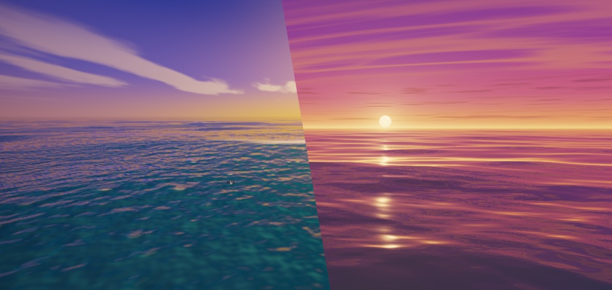
On my games computing course I joked that for my assignment I could just import an ocean. I didn't. I used a water texture and kept it flat, and that was that.
So this lab is me closing the loop. The water I couldn't be bothered to build then is now several hundred lines of shader, and I didn't write them by hand. WebGL is something I have no experience in. My world is HTML, CSS, JS, Next.js, React, TypeScript and Node. Seeing what Claude and AI can help me get done in a field I'm new to is the part I'm most pleased about.
Rule: an old joke is a decent brief.
Open ocean. A golden-hour skyline. A penguin floating off in the distance, there if you look, easy to miss if you don't. Everything in raw WebGL2, nothing to install, and it has to hold up on desktop and on a phone.
The penguin is the point. A good sea makes people say "huh, that looks real". A tiny penguin in it makes them lean toward the screen.
Rule: realism gets the attention, a small surprise keeps it.
I can't judge a rendering technique from a paragraph, so I had three built side by side. Same brief, different engines:
A, raymarched. One shader, no geometry. Every pixel fires a ray at a sea made of summed waves. It felt like Ratchet & Clank to me, which I loved, but the performance worried me.
B, swell mesh. A real grid of triangles, spaced out toward the horizon, pushed around by sixteen Gerstner waves from a 170m swell down to a 0.65m chop. The sun sits right on the horizon. This one was Vice City, or Miami: that exotic, neon-dusk look. With GTA VI round the corner I think it would resonate with a lot of people.
C, baked spectrum. At load it spends about a second building a wave field from a physical wave spectrum, then every frame just reads from it. Cheap per pixel by design. It was the first one I saw and it impressed me, even if it was the more relaxed of the three.
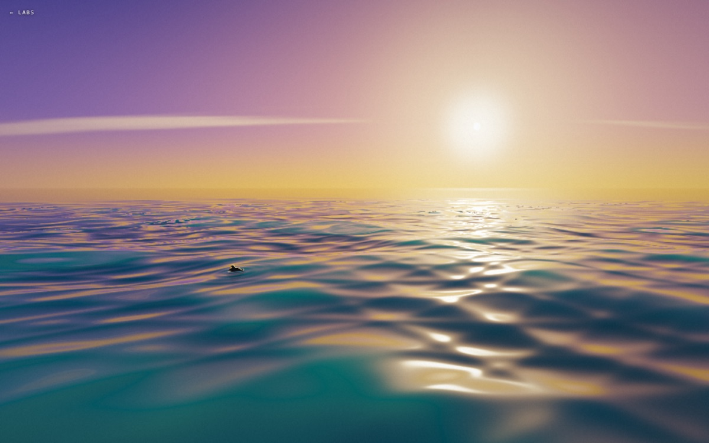
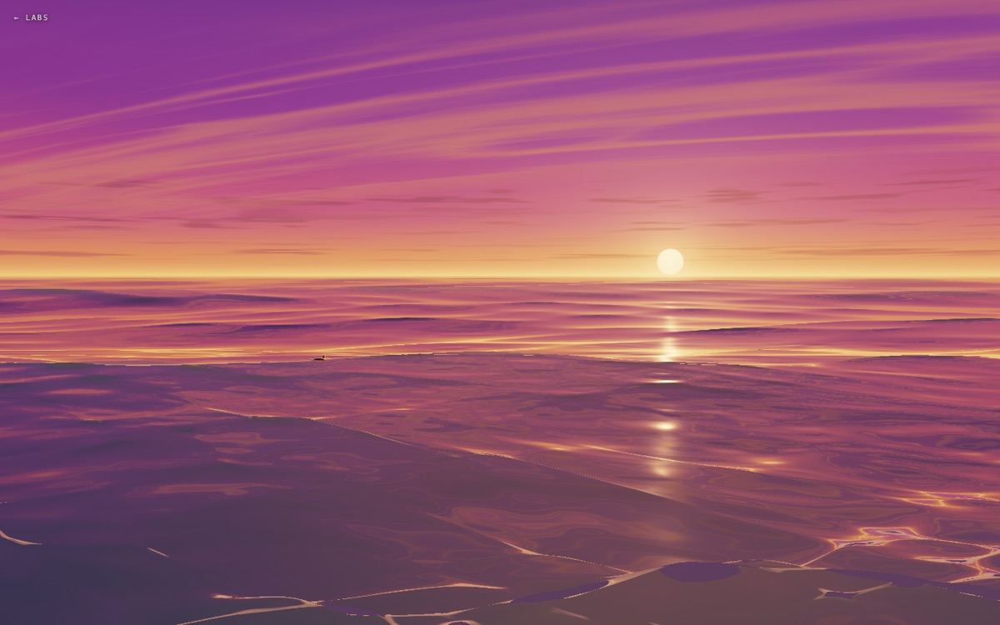
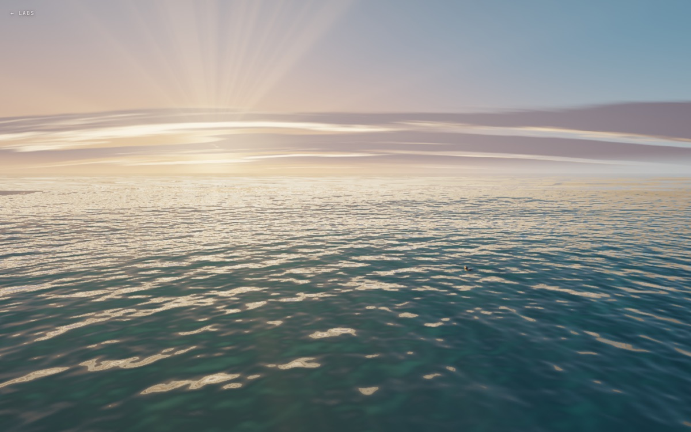
Rule: build the options, then argue about them.
From memory I liked C the most, but on a second look I was torn between B and C. A was the one I let go: I loved how it felt, but the performance worried me. So I asked for one more round: C with the feel of A's golden light, and B with a gentler swell.
Then they were still so close that I asked for both, with a toggle, in the same file. The page is built so I can fold it down to one later: each look is its own engine, with its own script, canvas and button, and nothing else refers to it.
Rule: if two are this close, ship both and let people vote with a tap.
My note on B was that when a big swell rose, I could see below the water, and it broke the illusion. I assumed it was just too big. Cutting the swell by about half helped, but the real cause was that the big waves were also sliding the nearest part of the mesh sideways, away from the camera, so the sea opened up in front of you. The sideways push now fades out close to the camera.
The same pass found the bright seam and the faint contour rings I'd spotted: both were foam firing on every bit of chop. It's calmer now, and a little flatter near the camera. That is the price.
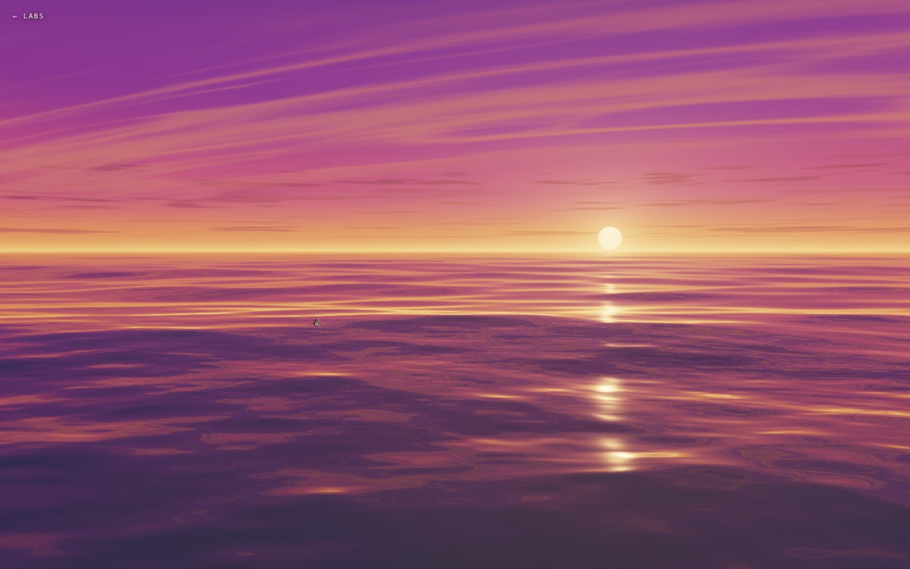
Rule: when the illusion breaks, find which thing it broke on, not just which number is too big.
The first penguins were fine and forgettable. I wanted the one I used in a games computing assignment at uni, which I think came from the OGRE graphics engine: a round, slightly startled bird with huge pale eyes and flippers stuck out like it's balancing. So this one floats front-on, waterline across its belly, rides the swell, turns its head now and then and twitches a flipper.
It is drawn from scratch, in the shader, so there is no model file. At normal size it is about 22 to 25 pixels wide: a dark head, two pale dots, a flick of orange. Add ?penguinzoom to the address to see it at 8x. The flippers are still a bit stick-like up close. I can live with that.
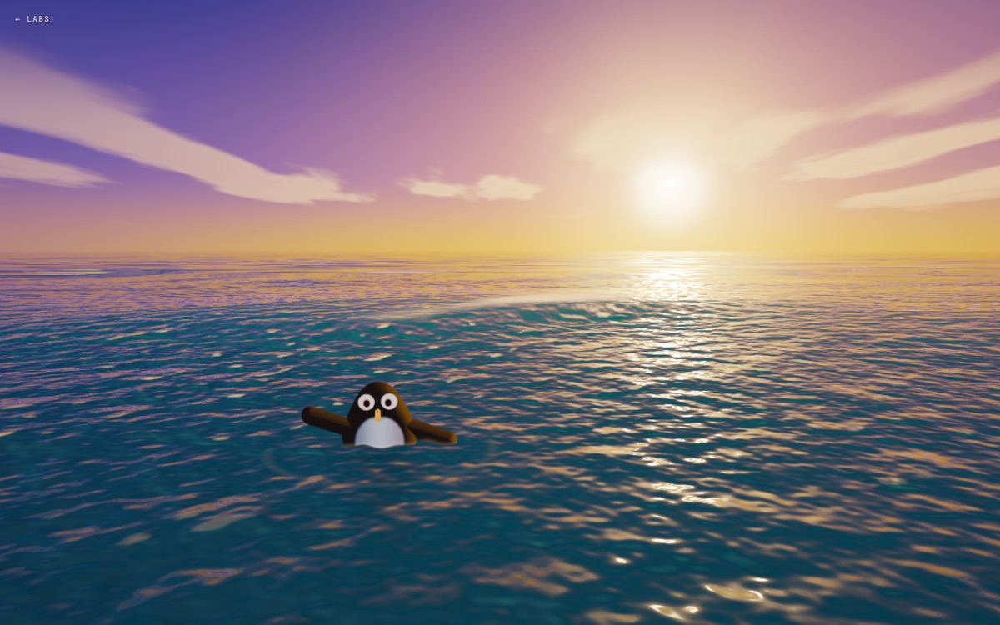
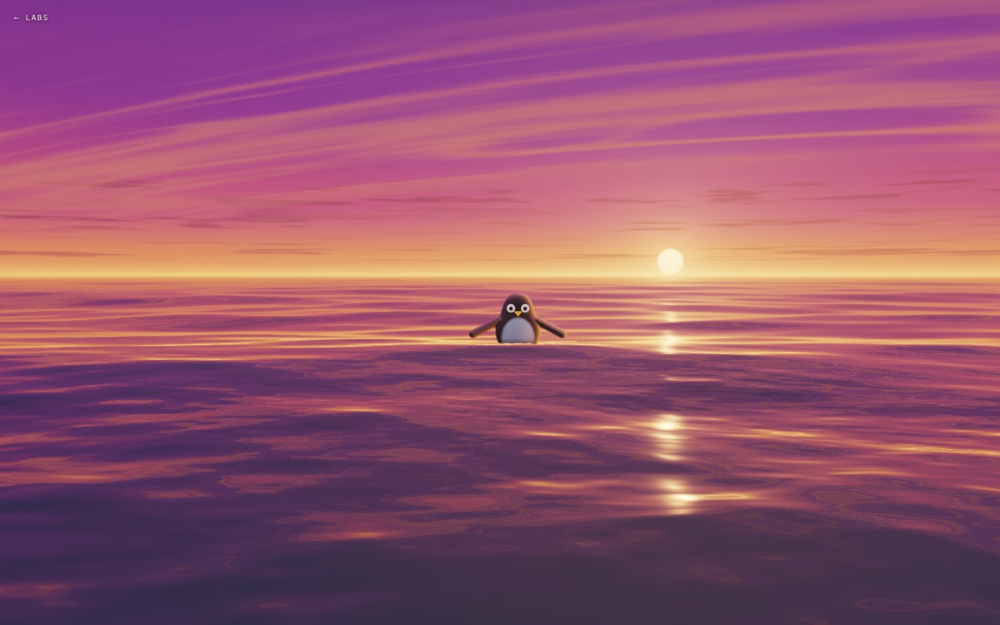
Rule: specific and slightly wrong beats average. The penguin from my degree beats a generic one.
On my Mac every version held a flat 120fps, which is just the ceiling of the display and tells you nothing. So I stopped the animation loop, drew frames back to back and timed them, forcing the GPU to finish each one. That gives a cost per frame, which is what a phone cares about.
Below, each row is one version. First, how many pixels it was drawing. Then, how long one frame took. In the second chart the two dashed lines are the budgets: miss the left one and you can't hold 120fps, miss the right one and you can't hold 60.
The two coloured bars are the iterations that shipped: yellow to blue for golden hour, purple to yellow for sunset.
| Version | Pixels | Per frame | Per megapixel |
|---|---|---|---|
| A, raymarched (not taken) | 2.56 MP | ~7.3 ms | 2.9 ms |
| B, sunset (first go) | 1.96 MP | ~4.1 ms | 2.1 ms |
| B, sunset (iteration) | 1.96 MP | ~2.4 ms | 1.2 ms |
| C, golden hour (first go) | 2.56 MP | ~1.9 ms | 0.7 ms |
| C, golden hour (iteration) | 2.56 MP | ~1.9 ms | 0.7 ms |
A, at 7.3ms, was nearly out of budget for 120fps on a laptop, which is why it worried me. After the second round I was happy with the performance of both. Each look also renders at a lower resolution when frames run slow, steps back up when there's room, and stops when the tab is hidden. Only the visible look runs, and the other is built the first time you ask for it. The FPS button on the lab shows a live readout.
One honest caveat: these are numbers from one Mac. I haven't tried a phone yet. A phone GPU is a lot slower, so the point is the gaps between rows, not the milliseconds.
Rule: measure the cost of a frame, not whether it kept up.
The final page is a toggle at the bottom (or press T): Golden hour and Sunset. Switching crossfades, the one you leave stops rendering, and your choice is remembered. Add ?look=sunset to link straight to one.
After the iteration the golden hour one almost feels like Final Fantasy X to me: playing blitzball, the Brotherhood sword. Iconic gaming things. I didn't ask for that, it just turned up.
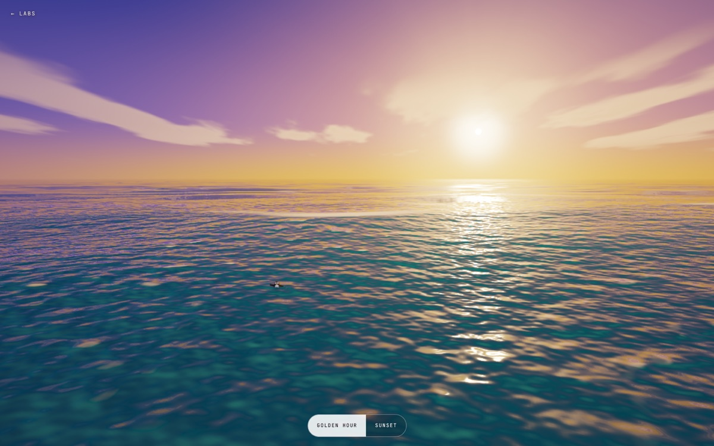
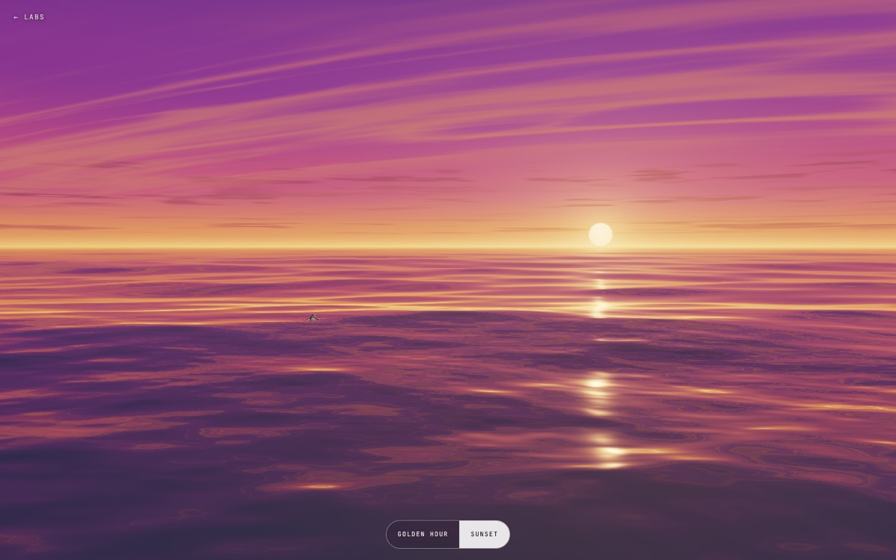
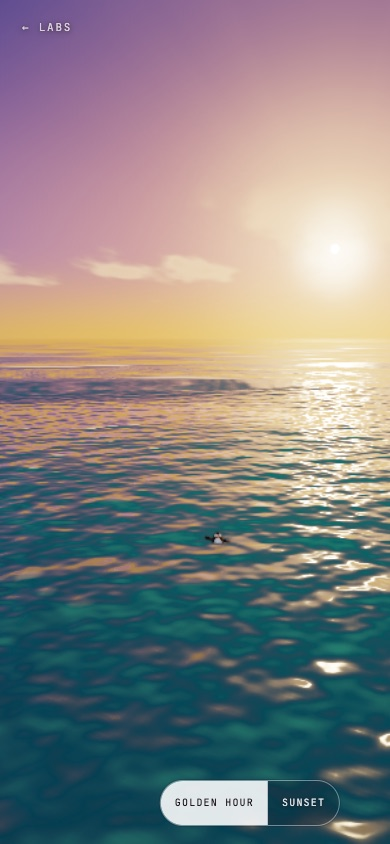
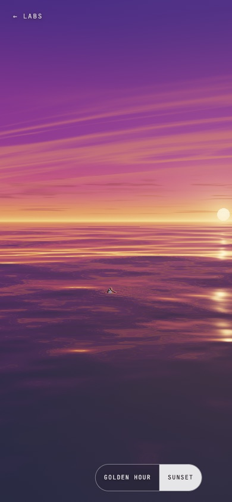
All the screenshots here were rendered by a headless browser in software, so the colours are right and the speed means nothing. The three first directions, and the two follow-ups, are still in the repo under ocean/directions/.
Rule: keep the road not taken. It's the best part of the story.
You can import an ocean now. It takes a handful of rounds of asking the right questions, a bit of arguing about which of two nearly identical seas is better, and a lot of patience with a penguin's flippers.
I knew none of the shader side going in. What I did know was what looked right, what felt like a game I'd loved, and how to say "that breaks the illusion". That turned out to be enough to steer.
Rule: taste transfers. The stack doesn't have to.